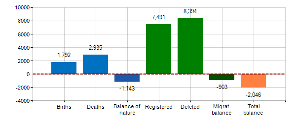

Discover Verona
The historic city of Verona was founded in the 1st century B.C. It particularly flourished under the rule of the Scaliger family in the 13th and 14th centuries and as part of the Republic of Venice from the 15th to 18th centuries. Verona has preserved a remarkable number of monuments from antiquity, the medieval and Renaissance periods, and represents an outstanding example of a military stronghold. Verona's surviving architecture and urban structure reflects the evolution of this fortified town over its 2,000 year history. The city is situated in northern Italy, in the Veneto region, at the foot of the Lessini Mountains on the River Adige. At the end of the year 2021 the data reported that there were 255,985 inhabitants living in the city.
Demographic Balance
Inhabitans Trend
Take a Tour With Us
The Verona Arena
The Verona Arena (Italian: Arena di Verona) is a Roman amphitheatre in Piazza Bra in Verona, Italy built in 30 AD.
It is still in use today and is internationally famous for the large-scale opera performances given there.
It is one of the best preserved ancient structures of its kind (the construction of the Colosseum in Rome started only in 70 AD).
In ancient times, the arena's capacity was nearly 30,000 people.
The stage for concerts and opera performances decreases the available places to a maximum of 22,000.
Juliet House
Juliet's House, one of the most famous places in the city of Verona and an absolute reference point for lovers of the world, is a medieval palace in Verona, where the Dal Cappello family probably lived since the 13th century.
The family gave its name to the street and the emblem is carved into a relief in the keystone of the internal arch of the building's courtyard.
Castelvecchio
Castelvecchio (Italian: "Old Castle") is a castle in Verona, northern Italy.
It is the most important military construction of the Scaliger dynasty that ruled the city in the Middle Ages. The castle is powerful and compact in its size with very little decoration - one square compound built in red bricks, one of the most prominent examples of Gothic architecture of the age, with imposing M-shaped merlons running along the castle and bridge walls.
It has seven towers, a superelevated keep (maschio) with four main buildings inside. The castle is surrounded by a ditch, now dry, which was once filled with waters from the nearby Adige.
The Roman Theatre
The Roman theatre of Verona (Italian: Teatro Romano di Verona) is an ancient Roman theatre in Verona, northern Italy. It is not to be confused with the Roman amphitheatre known as the Verona Arena.
The theatre was built in the late 1st century BC. Before its construction, two walls were built alongside the Adige River, between the Ponte di Pietra and the Ponte Postumio, to protect it against floods.
Today only remains of the edifice are visible, recovered starting from around 1830. They include the cavea and the steps, several arcades of the loggias and remains of the stage. Part of the cavea was occupied by the church of S. Siro, built in the 10th century and restored in the 14th century.
At the top of the hill there was an ancient temple, built on a series of terraces.
Herbs Square
Piazza delle Erbe, literally Herbs Square is the ancient Roman forum of Verona. It has always been the exact center of the city, a meeting place for locals and visitors alike, where you can stop for an aperitif and chat with friends in an enchanting setting.
All around, buildings and monuments of every age and style make it an unmissable stop on any guided tour of Verona.
Verona by Night
When the sun comes downs and lights go on, Verona starts to shine. The many restaurants with their delicious dishes, the Roman Theatre and the Arena, with their many concerts, live shows, and festivals, and its nightlife, create a special atmosphere that must be lived. Even if you didn't reserve a restaurant or bought a ticket for a show, take a walk and taste a gelato from the many gelaterias that are in town.